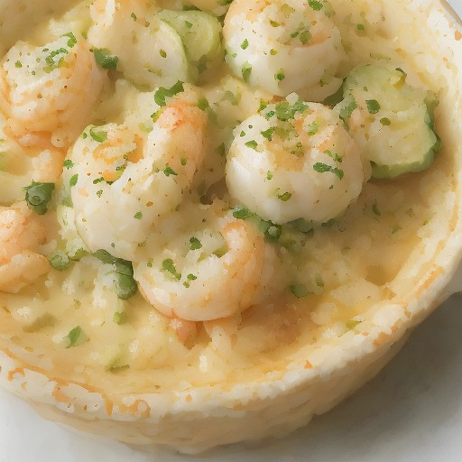

デザート
悪魔の甘辛海老バターグラタン：クリーミーな海風と甘辛のハーモニー

クリーミーなアボカドと、甘辛な海老が融合した、悪魔的な美味しさ！とろけるバターと、チーズの香ばしさで、満足感あふれるグラタンです。
💡 こんな時・こんな人におすすめ！
特別な夜に、特別なひとときを演出する
📋 必要な材料（ポストイット風）
材料リスト 1
- 海老100g
- アボカド1個
- バター50g
材料リスト 2
- グラタンソース100g
- チーズ50g
- 卵1個
🍳 作り方ステップ
1
1. エビを水洗いし、塩コショウで味付けをする。
2
2. アボカドは、皮を剥き、みじん切りにする。
3
3. バターを溶かし、グラタンソースと混ぜる。
4
4. 卵を溶き、チーズと混ぜる。グラタンソースに溶き卵とチーズを加え、混ぜる。
5
5. エビとアボカドを加え、混ぜ合わせる。
6
6. 耐熱皿に、グラタンソースとエビアボカドを均等に盛り付ける。
7
7. オーブンで180℃に予熱し、15分焼成する。
8
8. 仕上げに、チーズを振りかける。